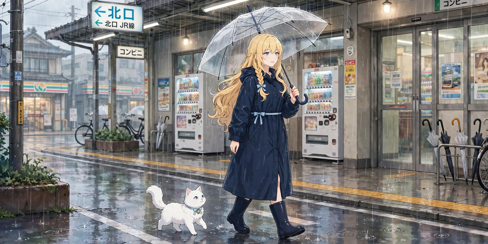

雨の日の靴と服の選び方（40代）

ルミ：濡れたマンホールと駅のタイルは滑るから、ソールもちゃんと見るにゃ。
この記事の商品（先に比較）
| 商品 | 価格（税込） | お店 |
|---|---|---|
| TOCCA 晴雨兼用レインパンプス | 16,500円 | TOCCA |
| 6cmヒール ショートレインブーツ | 2,798円 | 靴のSFW |
| 厚底 防水レインスニーカー | 5,980円 | uricca（ウリッカ） by SHINY-MART |
| キルティング ミドルレインブーツ | 5,980円 | uricca（ウリッカ） by SHINY-MART |
| 厚底 ショートレインブーツ | 3,790円 | uricca（ウリッカ） by SHINY-MART |
| 自転車対応 ロングレインコート | 4,800円 | アエトニクス Rain＆Outdoor |
| 回転フード レインポンチョ | 4,100円 | アエトニクス Rain＆Outdoor |
| 透湿防水 レインパンツ | 1,980円 | アエトニクス Rain＆Outdoor |
| ストレッチ レインパンツ | 2,100円 | アエトニクス Rain＆Outdoor |
| はっ水 ノーカラーライトブルゾン | 4,480円 | ハニーズ オンラインショップ |
価格は2026年11月25日に確認したものです。靴のSFWの1点は34%OFFのセール価格、アエトニクスのレインコートは6,800円から4,800円に値下げされていました。アエトニクスのポンチョとレインパンツ2点はサイズにより価格が変わります。セールやクーポンで変わることがあります。
目安1：靴は「防水」と「滑りにくいソール」で選ぶ
雨の日の靴で一番大事なのは、水が入りにくいことと、濡れた路面で滑りにくいことです。商品ページに「防水」「止水テープ」「滑りにくい靴底」などの表示があるものを選んでください。TOCCAの晴雨兼用パンプスは、縫い目に止水テープが使われ、滑りにくい靴底で、3cmのウェッジソールなので歩きやすい形です。靴のSFWのショートレインブーツは、6cmの太ヒールで安定感があり、滑り止め加工の靴底と、取り外せるインソールがついています。uriccaの厚底レインスニーカーはPVC素材で防水・撥水・滑りにくいと説明され、スニーカー型なので歩く距離が長い日にも向いています。同じuriccaのキルティングのミドル丈ブーツは、ふくらはぎまでカバーできるので、雨が強い日や水たまりの多い道でも安心です。ショート丈のブーツは脱ぎ履きがしやすく、オフィスで履き替える日にも便利です。丈は、雨の強さと歩く道で選んでください。ヒールは細いものより太いものの方が、濡れた路面では安定します。
目安2：服は「はっ水」と「透湿」の表示で選ぶ
雨の日の服は、水をはじく「はっ水」と、内側の蒸れを逃がす「透湿」の2つで選んでください。はっ水だけの服は、長時間着ていると内側が蒸れてきます。アエトニクスのロングレインコートは、三角マチで自転車が漕ぎやすく、総裏メッシュと二重前立てで、雨の日の移動に向いています。同じアエトニクスのレインポンチョは、耐水圧5000mmで、特許の回転フードがついています。リュックを背負ったまま着られて、反射帯もついているので、夕方の帰り道にも安心です。レインパンツの2点は、透湿防水で、耐水圧10000mm・透湿度5000gと表示されています。ストレッチの入った1点は動きやすく、ファスナー付きポケットがついています。ハニーズのはっ水ブルゾンは、非フッ素の撥水加工で、ファイバーダウンの中綿が入っています。自宅で洗濯できるので、雨のシーズンの普段使いにも向いています。服を選ぶときは、耐水圧と透湿度の数字が商品ページに書かれているかを確認してください。数字が書かれていないものは、どの程度の雨まで使えるのかが分かりにくいです。
目安3：丈と色で雨の日の重さを軽くする
雨の日は、空も道も暗く見えがちです。服と靴の丈と色を工夫すると、見た目の重さが軽くなります。ロング丈のレインコートは、裾が濡れやすいので、階段を上るときに裾を踏まない長さを選んでください。ミドル丈のブーツと合わせると、足元の濡れも防げます。色は、雨の日こそ明るい色がおすすめです。今回の商品では、ショートブーツにアイボリーやピンク、ライムがあり、レインコートも5色から選べます。全身を黒や紺でまとめると重く見えるので、コートか靴のどちらか1点を明るい色にすると、印象が軽くなります。透けやすい薄手の服は、雨で濡れると下着のラインが出やすいので、裏地のあるものや、濃い色のものを選んでください。
あえて推さないもの
- 防水・はっ水の表示がない普通の靴や服（雨の日に履くと、内側まで濡れて乾きにくいです）
- ソールの溝が浅く、つるつるしたもの（濡れたタイルやマンホールで滑りやすくなります）
- 透湿性のないビニール製の合羽（内側が蒸れて、長時間着ていられません）
- 丈が長すぎて階段で裾を踏みそうなコート（転倒の心配もあります）
- ヒールが細すぎるもの（濡れた路面では不安定になります）
雨の日のコーディネート（色合わせのコツ）
雨の日のコーディネートは、コートと靴の色を合わせるのが基本です。たとえば、紺のレインコートには紺や黒のブーツ、ベージュのコートにはアイボリーのブーツを合わせると、まとまりが出ます。バッグは、濡れても中身が守られる、はっ水加工のあるものが向いています。傘は、コートの色とけんかしない、無地に近いものを選ぶと、全体がすっきり見えます。雨の日は荷物が増えがちですが、バッグが重いと肩が凝って姿勢も崩れます。荷物は、財布・スマホ・傘・替えの靴下の4点を目安に、軽くまとめてください。替えの靴下を1足バッグに入れておくと、万が一靴の中が濡れても、オフィスで履き替えられます。
靴と服のお手入れ（乾かし方・防水スプレー・洗濯）
雨の日に履いた靴と着た服は、その日のうちにお手入れしておくと長持ちします。靴は、帰宅したらまず中の湿りを取るために、新聞紙やシューキーパーを入れてください。ドライヤーの熱風や直射日光で乾かすと、素材が傷むので避けてください。風通しの良い日陰で、1日かけてゆっくり乾かすのが基本です。レインコートやポンチョは、乾いたあとに防水スプレーをかけておくと、はっ水が長持ちします。スプレーをかけるときは、全体にまんべんなく、少し離して吹きかけてください。ハニーズのブルゾンは自宅で洗濯できるので、シーズンの終わりに洗ってからしまうと、次のシーズンも気持ちよく使えます。レインパンツも、泥がついたままにせず、乾いたあとに軽く拭いておくのがおすすめです。
出かける前のチェック（試し履き・裾・傘）
- 夕方、足が少しむくんだ時間に試し履きする（朝と夕方では足のサイズが変わります）
- サイズ展開を確認する（uriccaのスニーカー型は22.5〜25.5cm、ミドル丈ブーツは23.0〜26.0cmです）
- コートの裾の長さを、階段を上る姿勢で確認する
- 傘とコートの色が合っているか、鏡の前で確認する
- 替えの靴下をバッグに入れたか確認する
雨の日の1足と1枚は、晴れた日のものとは別に用意しておくと、普段の靴や服を長持ちさせられます。梅雨や台風の時期に入る前に、1セット用意しておくのがおすすめです。
この記事の目安に合う商品
特徴：防水・はっ水の靴5点と服5点。TOCCAの晴雨兼用パンプス、アエトニクスのレインコートとポンチョ、ハニーズの撥水ブルゾンなど。価格は2026年11月25日に確認したものです。サイズにより価格が変わるものがあります。


厚底 防水レインスニーカー
厚底スニーカー型のレインシューズ。PVC素材、防水・撥水・滑りにくい、22.5〜25.5cm。半額クーポン対象
5,980円（税込）
uricca（ウリッカ） by SHINY-MART

キルティング ミドルレインブーツ
キルティングデザインのミドル丈レインブーツ。防水・晴雨兼用、23.0〜26.0cm。半額クーポン対象
5,980円（税込）
uricca（ウリッカ） by SHINY-MART

厚底 ショートレインブーツ
厚底ショート丈のレインブーツ。PVC素材、ブラック/アイボリー/ピンク/ライム。半額クーポン対象
3,790円（税込）
uricca（ウリッカ） by SHINY-MART

自転車対応 ロングレインコート
6,800円→4,800円に値下げ（ページ表示・税込送料込み）。三角マチで自転車が漕ぎやすい、総裏メッシュ・二重前立て、5色
★4.3（レビュー237件）
4,800円（税込）
アエトニクス Rain＆Outdoor

回転フード レインポンチョ
4,100円〜（サイズにより価格が異なる）。特許の回転フード、耐水圧5000mm、リュック対応・反射帯
★4.39（レビュー4,299件）
4,100円（税込）
アエトニクス Rain＆Outdoor

透湿防水 レインパンツ
1,980円〜（サイズにより価格が異なる）。耐水圧10000mm・透湿度5000g、L約150g、裾スナップボタン付き
★4.34（レビュー315件）
1,980円（税込）
アエトニクス Rain＆Outdoor

ストレッチ レインパンツ
2,100円〜（サイズにより価格が異なる）。ストレッチ生地・ファスナー付きポケット、L約198g、SS〜XXXL
★4.43（レビュー1,614件）
2,100円（税込）
アエトニクス Rain＆Outdoor

あわせて読みたい：靴・バッグ種類別ガイド／歩きやすい靴とバッグの選び方／美しく見える歩き方